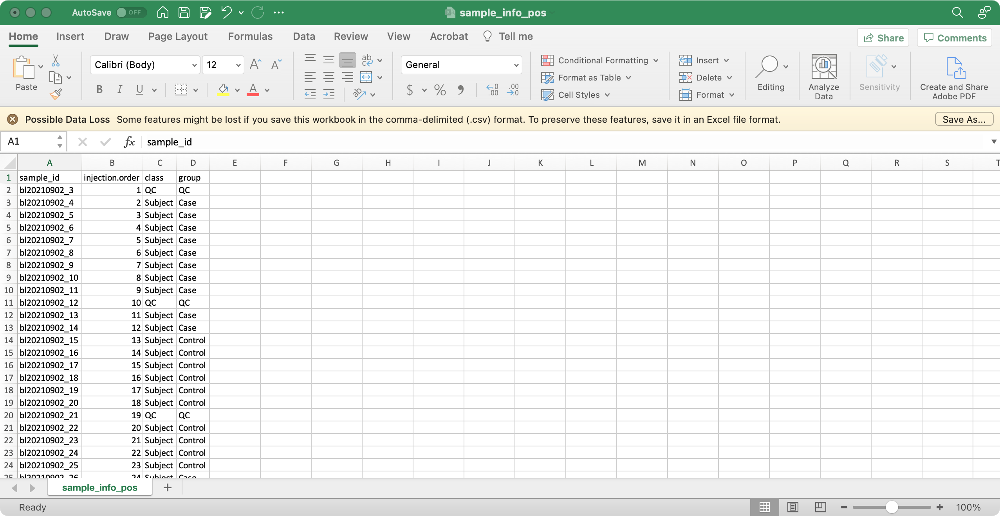
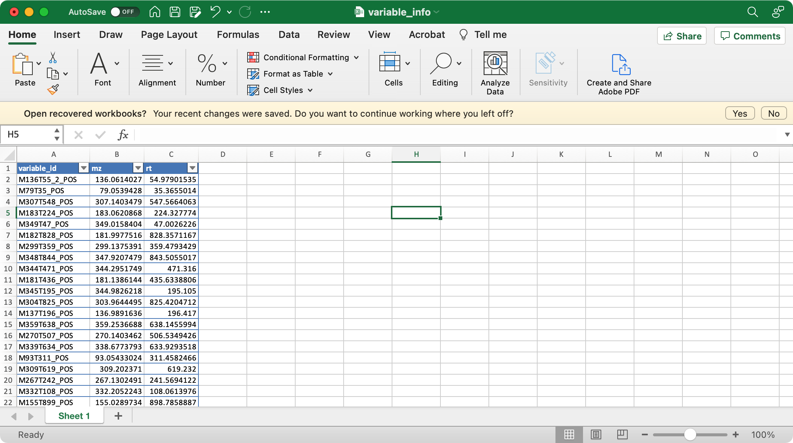
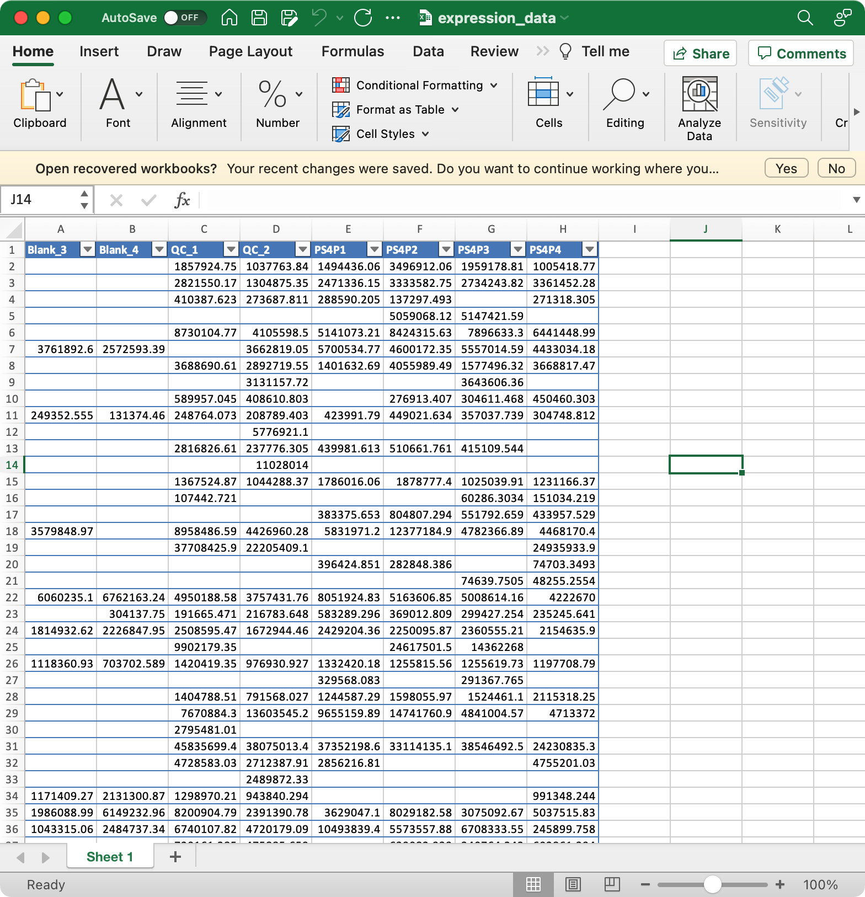
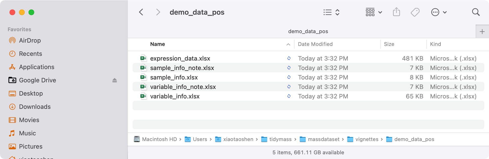

Data import and export
Xiaotao Shen
Created on 2021-12-04 and updated on 2026-03-02
Source:vignettes/data_import_and_export.Rmd
data_import_and_export.RmdData preparation
The massdataset class object can be used to store the
untargeted metabolomics data.
Let’s first prepare the data objects according to the attached figure for each file.
1. sample_info (required)
The columns sample_id (sample ID),
injection.order (injection order of samples),
class (Blank, QC, Subject, etc), group (case,
control, etc) are required.

2. variable_info (required)
The columns variable_id (variable ID), mz
(mass to charge ratio), rt (retention time, unit is second)
are required.

3. expression_data (required)
Columns are samples are rows are features (variables).
The column names of expression_data should be completely same with sample_id in
sample_info, and the row names of expression_data should be completely same with variable_id invariable_info.

Download demo data
Here we use the demo data bundled with the vignette source tree.
Download this data and uncompress it. And then set the path where you put the folder as working directory.
Then prepare data.
library(tidyverse)
#> ── Attaching core tidyverse packages ──────────────────────── tidyverse 2.0.0 ──
#> ✔ dplyr 1.1.4 ✔ readr 2.1.5
#> ✔ forcats 1.0.0 ✔ stringr 1.5.1
#> ✔ ggplot2 4.0.2 ✔ tibble 3.3.0
#> ✔ lubridate 1.9.4 ✔ tidyr 1.3.1
#> ✔ purrr 1.1.0
#> ── Conflicts ────────────────────────────────────────── tidyverse_conflicts() ──
#> ✖ dplyr::filter() masks stats::filter()
#> ✖ dplyr::lag() masks stats::lag()
#> ℹ Use the conflicted package (<http://conflicted.r-lib.org/>) to force all conflicts to become errors
peak_table_pos = readr::read_csv("feature_table/Peak_table_pos.csv")
#> Rows: 1612 Columns: 39
#> ── Column specification ────────────────────────────────────────────────────────
#> Delimiter: ","
#> chr (1): variable_id
#> dbl (38): mz, rt, bl20210902_10, bl20210902_11, bl20210902_13, bl20210902_14...
#>
#> ℹ Use `spec()` to retrieve the full column specification for this data.
#> ℹ Specify the column types or set `show_col_types = FALSE` to quiet this message.
peak_table_neg = readr::read_csv("feature_table/Peak_table_neg.csv")
#> Rows: 5486 Columns: 39
#> ── Column specification ────────────────────────────────────────────────────────
#> Delimiter: ","
#> chr (1): variable_id
#> dbl (38): mz, rt, X20210902_neg04, X20210902_neg05, X20210902_neg06, X202109...
#>
#> ℹ Use `spec()` to retrieve the full column specification for this data.
#> ℹ Specify the column types or set `show_col_types = FALSE` to quiet this message.
sample_info_pos = readr::read_csv("feature_table/sample_info_pos.csv")
#> Rows: 36 Columns: 4
#> ── Column specification ────────────────────────────────────────────────────────
#> Delimiter: ","
#> chr (3): sample_id, class, group
#> dbl (1): injection.order
#>
#> ℹ Use `spec()` to retrieve the full column specification for this data.
#> ℹ Specify the column types or set `show_col_types = FALSE` to quiet this message.
sample_info_neg = readr::read_csv("feature_table/sample_info_neg.csv")
#> Rows: 36 Columns: 4
#> ── Column specification ────────────────────────────────────────────────────────
#> Delimiter: ","
#> chr (3): sample_id, class, group
#> dbl (1): injection.order
#>
#> ℹ Use `spec()` to retrieve the full column specification for this data.
#> ℹ Specify the column types or set `show_col_types = FALSE` to quiet this message.Variable information and expression data are in the peak table. Let’s separate them.
expression_data_pos =
peak_table_pos %>%
dplyr::select(-c(variable_id:rt)) %>%
as.data.frame()
variable_info_pos =
peak_table_pos %>%
dplyr::select(variable_id:rt) %>%
as.data.frame()
rownames(expression_data_pos) = variable_info_pos$variable_id
expression_data_neg =
peak_table_neg %>%
dplyr::select(-c(variable_id:rt)) %>%
as.data.frame()
variable_info_neg =
peak_table_neg %>%
dplyr::select(variable_id:rt) %>%
as.data.frame()
rownames(expression_data_neg) = variable_info_neg$variable_id
colnames(expression_data_pos) == sample_info_pos$sample_id
#> [1] FALSE FALSE FALSE FALSE FALSE FALSE FALSE FALSE FALSE FALSE FALSE FALSE
#> [13] FALSE FALSE FALSE FALSE FALSE FALSE FALSE FALSE FALSE FALSE FALSE FALSE
#> [25] FALSE FALSE FALSE FALSE FALSE FALSE FALSE FALSE FALSE FALSE TRUE TRUE
colnames(expression_data_neg) == sample_info_neg$sample_id
#> [1] FALSE FALSE FALSE FALSE FALSE FALSE FALSE FALSE FALSE FALSE FALSE FALSE
#> [13] FALSE FALSE FALSE FALSE FALSE FALSE FALSE FALSE FALSE FALSE FALSE FALSE
#> [25] FALSE FALSE FALSE FALSE FALSE FALSE FALSE FALSE FALSE FALSE TRUE TRUEThe orders of sample_id in sample_info and
column names of expression_data are different.
expression_data_pos =
expression_data_pos[,sample_info_pos$sample_id]
expression_data_neg =
expression_data_neg[,sample_info_neg$sample_id]
colnames(expression_data_pos) == sample_info_pos$sample_id
#> [1] TRUE TRUE TRUE TRUE TRUE TRUE TRUE TRUE TRUE TRUE TRUE TRUE TRUE TRUE TRUE
#> [16] TRUE TRUE TRUE TRUE TRUE TRUE TRUE TRUE TRUE TRUE TRUE TRUE TRUE TRUE TRUE
#> [31] TRUE TRUE TRUE TRUE TRUE TRUE
colnames(expression_data_neg) == sample_info_neg$sample_id
#> [1] TRUE TRUE TRUE TRUE TRUE TRUE TRUE TRUE TRUE TRUE TRUE TRUE TRUE TRUE TRUE
#> [16] TRUE TRUE TRUE TRUE TRUE TRUE TRUE TRUE TRUE TRUE TRUE TRUE TRUE TRUE TRUE
#> [31] TRUE TRUE TRUE TRUE TRUE TRUE
Create mass_data class object
Then we can create mass_data class object using
create_mass_dataset() function.
library(massdataset)
#> massdataset 0.99.1 (2026-03-01 18:35:38.579125)
#>
#> Attaching package: 'massdataset'
#> The following object is masked from 'package:stats':
#>
#> filter
object_pos =
create_mass_dataset(
expression_data = expression_data_pos,
sample_info = sample_info_pos,
variable_info = variable_info_pos
)
object_pos
#> --------------------
#> massdataset version: 0.99.1
#> --------------------
#> 1.expression_data:[ 1612 x 36 data.frame]
#> 2.sample_info:[ 36 x 4 data.frame]
#> 36 samples:bl20210902_3 bl20210902_4 bl20210902_5 ... bl20210902_37 bl20210902_38
#> 3.variable_info:[ 1612 x 3 data.frame]
#> 1612 variables:M86T44_POS M90T638_POS M91T631_POS ... M1197T265_POS M1198T265_POS
#> 4.sample_info_note:[ 4 x 2 data.frame]
#> 5.variable_info_note:[ 3 x 2 data.frame]
#> 6.ms2_data:[ 0 variables x 0 MS2 spectra]
#> --------------------
#> Processing information
#> 1 processings in total
#> create_mass_dataset ----------
#> Package Function.used Time
#> 1 massdataset create_mass_dataset() 2026-03-02 09:27:49Then negative mode.
object_neg =
create_mass_dataset(
expression_data = expression_data_neg,
sample_info = sample_info_neg,
variable_info = variable_info_neg
)
object_neg
#> --------------------
#> massdataset version: 0.99.1
#> --------------------
#> 1.expression_data:[ 5486 x 36 data.frame]
#> 2.sample_info:[ 36 x 4 data.frame]
#> 36 samples:X20210902_neg03 X20210902_neg04 X20210902_neg05 ... X20210902_neg37 X20210902_neg38
#> 3.variable_info:[ 5486 x 3 data.frame]
#> 5486 variables:M74T229_NEG M88T115_NEG M100T631_NEG ... M1199T22_NEG M1199T180_NEG
#> 4.sample_info_note:[ 4 x 2 data.frame]
#> 5.variable_info_note:[ 3 x 2 data.frame]
#> 6.ms2_data:[ 0 variables x 0 MS2 spectra]
#> --------------------
#> Processing information
#> 1 processings in total
#> create_mass_dataset ----------
#> Package Function.used Time
#> 1 massdataset create_mass_dataset() 2026-03-02 09:27:49Then save them for next analysis.
Export mass_dataset class object to csv for
xlsx
export_mass_dataset(object = object_pos,
file_type = "xlsx",
path = "demo_data_pos")Then all the data will be in the demo_data_pos
folder.

mzMine feature table to mass_dataset
class
We can also directory convert feature table from mzMine to mass_dataset
class.
An example feature table from mzMine.
| row ID | row m/z | row retention time | 10232_P4_RE4_01_476.mzXML Peak area | 10765_P4_RE9_01_482.mzXML Peak area | 10546_P4_RG11_01_515.mzXML Peak area | 11035_P4_RB4_01_431.mzXML Peak area | 11163_P4_RB11_01_439.mzXML Peak area | 13541_P4_RG3_01_506.mzXML Peak area | 10712_P4_RH3_01_521.mzXML Peak area | 10715_P4_RA4_01_415.mzXML Peak area | 11111_P4_RB1_01_428.mzXML Peak area | 14153_P4_RH8_01_526.mzXML Peak area | 18404_P3_RF6_01_370.mzXML Peak area | 16500_P2_RD8_01_209.mzXML Peak area | 13917_P4_RA10_01_423.mzXML Peak area | 16501_P2_RD9_01_210.mzXML Peak area | 14880_P3_RA3_01_290.mzXML Peak area | 15581_P2_RD4_01_203.mzXML Peak area | 29342_P5_RF3_01_620.mzXML Peak area | 15623_P2_RC3_01_187.mzXML Peak area | 12262_P1_RE5_01_94.mzXML Peak area | 27373_P2_RD5_01_204.mzXML Peak area | 31878_P1_RH3_01_131.mzXML Peak area | 14563_P1_RE10_01_99.mzXML Peak area |
|---|---|---|---|---|---|---|---|---|---|---|---|---|---|---|---|---|---|---|---|---|---|---|---|---|
| 1 | 108.51790 | 10.24505 | 1389687.3 | 1401752.8 | 1402784.6 | 1655499.3 | 1426946.5 | 1405056.0 | 1301424.7 | 1662174.7 | 1669773.7 | 1292471.4 | 1401058.6 | 1255984.4 | 1790633.1 | 1239958.2 | 1384509.0 | 1321642.1 | 1342898.4 | 1428609.7 | 0.00 | 1309347.2 | 0.0000 | 0.00 |
| 2 | 184.98560 | 10.24529 | 824854.7 | 879329.1 | 810711.7 | 918538.4 | 904935.9 | 863844.5 | 813936.4 | 959157.6 | 975521.4 | 819906.7 | 802451.8 | 805424.3 | 999066.5 | 797460.9 | 859813.1 | 821147.8 | 764305.2 | 859406.4 | 319453.12 | 812621.6 | 321342.3140 | 343921.07 |
| 3 | 99.51304 | 10.24432 | 779963.5 | 809016.6 | 784838.3 | 918355.9 | 869348.5 | 825338.8 | 757906.5 | 890287.1 | 945978.1 | 779467.9 | 784715.8 | 698338.0 | 995229.3 | 690797.5 | 755029.2 | 725875.2 | 727123.5 | 804957.8 | 0.00 | 729996.3 | 38.4895 | 0.00 |
| 4 | 176.97199 | 10.45647 | 3371036.7 | 3594238.9 | 3335427.7 | 4762133.2 | 4446552.3 | 4146207.6 | 3450606.1 | 4270036.0 | 4082635.8 | 3346233.6 | 3600719.2 | 2005356.9 | 5118346.2 | 1864347.1 | 3200536.9 | 2686899.7 | 2419853.5 | 2592535.7 | 28303.96 | 2038650.8 | 83238.3495 | 83362.95 |
| 6 | 186.95641 | 10.47076 | 3649387.6 | 2918579.6 | 3566568.1 | 3498499.8 | 4051221.1 | 3776597.5 | 3112945.0 | 4300303.6 | 3604041.9 | 3146833.4 | 2953320.1 | 2684678.0 | 4608083.2 | 2684874.6 | 2989385.9 | 2762750.3 | 2746261.2 | 2481040.3 | 100953.59 | 2617117.7 | 430218.5365 | 368020.74 |
| 7 | 108.51790 | 12.79046 | 799957.0 | 761629.2 | 746393.3 | 899613.6 | 790027.6 | 766091.8 | 671510.8 | 944502.5 | 971766.8 | 685098.2 | 849756.6 | 542205.9 | 1032801.9 | 545116.5 | 638052.2 | 597619.4 | 794760.3 | 720902.4 | 0.00 | 588069.0 | 0.0000 | 0.00 |
data("mzmine_table")
object =
convet_mzmine2mass_dataset(x = mzmine_table)
object
#> --------------------
#> massdataset version: 0.99.1
#> --------------------
#> 1.expression_data:[ 3443 x 22 data.frame]
#> 2.sample_info:[ 22 x 2 data.frame]
#> 22 samples:10232_P4_RE4_01_476.mzXML Peak area 10765_P4_RE9_01_482.mzXML Peak area 10546_P4_RG11_01_515.mzXML Peak area ... 31878_P1_RH3_01_131.mzXML Peak area 14563_P1_RE10_01_99.mzXML Peak area
#> 3.variable_info:[ 3443 x 3 data.frame]
#> 3443 variables:1 2 3 ... 12248 12382
#> 4.sample_info_note:[ 2 x 2 data.frame]
#> 5.variable_info_note:[ 3 x 2 data.frame]
#> 6.ms2_data:[ 0 variables x 0 MS2 spectra]
#> --------------------
#> Processing information
#> 1 processings in total
#> create_mass_dataset ----------
#> Package Function.used Time
#> 1 massdataset convet_mzmine2mass_dataset() 2026-03-02 09:27:50
MS-DIAL feature table to mass_dataset
class
We can also directly convert feature tables from MS-DIAL to a
mass_dataset object.
An example feature table from MS-DIAL.
| V1 | V2 | V3 | V4 | V5 | V6 | V7 | V8 | V9 | V10 | V11 | V12 | V13 | V14 | V15 | V16 | V17 | V18 | V19 | V20 | V21 | V22 | V23 | V24 | V25 | V26 | V27 | V28 | V29 | V30 | V31 | V32 | V33 | V34 | V35 | V36 | V37 | V38 | V39 | V40 | V41 | V42 | V43 | V44 | V45 | V46 | V47 | V48 | V49 | V50 | V51 | V52 | V53 | V54 |
|---|---|---|---|---|---|---|---|---|---|---|---|---|---|---|---|---|---|---|---|---|---|---|---|---|---|---|---|---|---|---|---|---|---|---|---|---|---|---|---|---|---|---|---|---|---|---|---|---|---|---|---|---|---|
| Class | 1 | 1 | 1 | 1 | 1 | 1 | 1 | 1 | 1 | 1 | 1 | 1 | 1 | 1 | 1 | 1 | 1 | 1 | 1 | 1 | NA | NA | |||||||||||||||||||||||||||||||
| File type | Sample | Sample | Sample | Sample | Sample | Sample | Sample | Sample | Sample | Sample | Sample | Sample | Sample | Sample | Sample | Sample | Sample | Sample | Sample | Sample | NA | NA | |||||||||||||||||||||||||||||||
| Injection order | 1 | 2 | 3 | 4 | 5 | 6 | 7 | 8 | 9 | 10 | 11 | 12 | 13 | 14 | 15 | 16 | 17 | 18 | 19 | 20 | NA | NA | |||||||||||||||||||||||||||||||
| Batch ID | 1 | 1 | 1 | 1 | 1 | 1 | 1 | 1 | 1 | 1 | 1 | 1 | 1 | 1 | 1 | 1 | 1 | 1 | 1 | 1 | Average | Stdev | |||||||||||||||||||||||||||||||
| Alignment ID | Average Rt(min) | Average Mz | Metabolite name | Adduct type | Post curation result | Fill % | MS/MS assigned | Reference RT | Reference m/z | Formula | Ontology | INCHIKEY | SMILES | Annotation tag (VS1.0) | RT matched | m/z matched | MS/MS matched | Comment | Manually modified for quantification | Manually modified for annotation | Isotope tracking parent ID | Isotope tracking weight number | Total score | RT similarity | Dot product | Reverse dot product | Fragment presence % | S/N average | Spectrum reference file name | MS1 isotopic spectrum | MS/MS spectrum | W03.01 | W03.02 | W03.03 | W03.04 | W03.05 | W03.06 | W03.07 | W03.08 | W03.09 | W03.10 | W30.01 | W30.02 | W30.03 | W30.04 | W30.05 | W30.06 | W30.07 | W30.08 | W30.09 | W30.10 | 1 | 1 |
| 0 | 1.091 | 60.04458 | Unknown | [M+H]+ | 0.6 | False | null | null | null | null | null | null | 999 | False | False | False | False | False | null | null | null | null | null | null | null | 15.17 | W30.08 | 60.04458:6394 61.04793:179 62.05129:0 | 72102 | 59455 | 61155 | 75126 | 70122 | 69224 | 71378 | 69357 | 76841 | 63669 | 71999 | 44361 | 71829 | 68214 | 46249 | 73209 | 39180 | 70302 | 47150 | 44413 | 63266.802734375 | 12079.2830605498 | |||
| 1 | 8.132 | 60.07921 | Unknown | [M+H]+ | found in higher mzs MsMs_115; found in higher mzs MsMs_3482 | 1 | True | null | null | null | null | null | null | 999 | False | False | False | False | False | null | null | null | null | null | null | null | 40.32 | W03.01 | 60.08072:10877 61.08407:315 62.08743:0 | 42.03227:122 43.01649:1202 43.03581:98 44.0484:592 60.08133:49 | 124220 | 117089 | 134748 | 117222 | 116787 | 129138 | 117582 | 124574 | 117542 | 112126 | 64263 | 136636 | 119736 | 125756 | 142278 | 130580 | 127754 | 129261 | 135510 | 129017 | 122590.935742188 | 15891.7745234752 |
data("msdial_table")
object =
convert_msdial2mass_dataset(x = msdial_table)
object
#> --------------------
#> massdataset version: 0.99.1
#> --------------------
#> 1.expression_data:[ 3751 x 20 data.frame]
#> 2.sample_info:[ 20 x 5 data.frame]
#> 20 samples:W03.01 W03.02 W03.03 ... W30.09 W30.10
#> 3.variable_info:[ 3751 x 32 data.frame]
#> 3751 variables:0 1 2 ... 6716 6717
#> 4.sample_info_note:[ 5 x 2 data.frame]
#> 5.variable_info_note:[ 32 x 2 data.frame]
#> 6.ms2_data:[ 0 variables x 0 MS2 spectra]
#> --------------------
#> Processing information
#> 1 processings in total
#> create_mass_dataset ----------
#> Package Function.used Time
#> 1 massdataset convert_msdial2mass_dataset() 2026-03-02 09:27:50Session information
sessionInfo()
#> R version 4.5.2 (2025-10-31)
#> Platform: aarch64-apple-darwin20
#> Running under: macOS Tahoe 26.3
#>
#> Matrix products: default
#> BLAS: /System/Library/Frameworks/Accelerate.framework/Versions/A/Frameworks/vecLib.framework/Versions/A/libBLAS.dylib
#> LAPACK: /Library/Frameworks/R.framework/Versions/4.5-arm64/Resources/lib/libRlapack.dylib; LAPACK version 3.12.1
#>
#> locale:
#> [1] C.UTF-8/C.UTF-8/C.UTF-8/C/C.UTF-8/C.UTF-8
#>
#> time zone: Asia/Singapore
#> tzcode source: internal
#>
#> attached base packages:
#> [1] stats graphics grDevices utils datasets methods base
#>
#> other attached packages:
#> [1] kableExtra_1.4.0 magrittr_2.0.3 massdataset_0.99.1 lubridate_1.9.4
#> [5] forcats_1.0.0 stringr_1.5.1 dplyr_1.1.4 purrr_1.1.0
#> [9] readr_2.1.5 tidyr_1.3.1 tibble_3.3.0 ggplot2_4.0.2
#> [13] tidyverse_2.0.0
#>
#> loaded via a namespace (and not attached):
#> [1] tidyselect_1.2.1 viridisLite_0.4.2
#> [3] farver_2.1.2 S7_0.2.0
#> [5] fastmap_1.2.0 digest_0.6.37
#> [7] timechange_0.3.0 lifecycle_1.0.4
#> [9] cluster_2.1.8.1 compiler_4.5.2
#> [11] rlang_1.1.6 sass_0.4.10
#> [13] tools_4.5.2 yaml_2.3.10
#> [15] knitr_1.50 S4Arrays_1.8.1
#> [17] htmlwidgets_1.6.4 bit_4.6.0
#> [19] DelayedArray_0.34.1 xml2_1.4.0
#> [21] RColorBrewer_1.1-3 abind_1.4-8
#> [23] withr_3.0.2 BiocGenerics_0.54.0
#> [25] desc_1.4.3 grid_4.5.2
#> [27] stats4_4.5.2 colorspace_2.1-1
#> [29] scales_1.4.0 iterators_1.0.14
#> [31] dichromat_2.0-0.1 SummarizedExperiment_1.38.1
#> [33] cli_3.6.5 rmarkdown_2.29
#> [35] crayon_1.5.3 ragg_1.4.0
#> [37] generics_0.1.4 rstudioapi_0.17.1
#> [39] httr_1.4.7 tzdb_0.5.0
#> [41] rjson_0.2.23 cachem_1.1.0
#> [43] parallel_4.5.2 XVector_0.48.0
#> [45] matrixStats_1.5.0 vctrs_0.6.5
#> [47] Matrix_1.7-4 jsonlite_2.0.0
#> [49] IRanges_2.42.0 hms_1.1.3
#> [51] GetoptLong_1.0.5 S4Vectors_0.48.0
#> [53] bit64_4.6.0-1 clue_0.3-66
#> [55] systemfonts_1.2.3 foreach_1.5.2
#> [57] jquerylib_0.1.4 glue_1.8.0
#> [59] pkgdown_2.1.3 codetools_0.2-20
#> [61] stringi_1.8.7 gtable_0.3.6
#> [63] shape_1.4.6.1 GenomeInfoDb_1.44.2
#> [65] GenomicRanges_1.60.0 UCSC.utils_1.4.0
#> [67] ComplexHeatmap_2.24.1 pillar_1.11.0
#> [69] htmltools_0.5.8.1 GenomeInfoDbData_1.2.14
#> [71] circlize_0.4.16 R6_2.6.1
#> [73] textshaping_1.0.1 doParallel_1.0.17
#> [75] lattice_0.22-7 Biobase_2.68.0
#> [77] vroom_1.6.5 evaluate_1.0.4
#> [79] png_0.1-8 openxlsx_4.2.8
#> [81] bslib_0.9.0 Rcpp_1.1.0
#> [83] zip_2.3.3 svglite_2.2.1
#> [85] SparseArray_1.8.1 xfun_0.53
#> [87] fs_1.6.6 MatrixGenerics_1.20.0
#> [89] pkgconfig_2.0.3 GlobalOptions_0.1.2